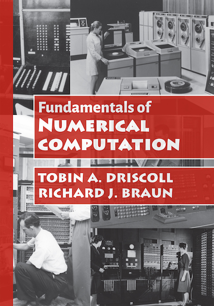

This book has its own page.
Now available for purchase from the SIAM Bookstore.
Fundamentals of Numerical Computation is a textbook by myself and Richard Braun designed to introduce undergraduates in math, computer science, engineering, and related fields to the principles and practice of numerical computation. Our approach emphasizes linear algebra and approximation. The text presents mathematical underpinnings and analysis, complemented with 45 functions and over 160 examples coded in MATLAB, all available for download. Previous experience in MATLAB is not required. The text is organized to be useful for either a one-semester introduction or two-semester sequence, with the most advanced techniques and concepts held back for the second half of the book. In addition to numerous exercises, we offer suggested in-class labs and applied projects that are synchronized with the text.
Written by Nick Trefethen, Asgeir Birkisson, and myself, Exploring ODEs takes a look at ordinary differential equations unlike any other text. Rather than focusing on the mechanics of finding solutions in a limited number of special problems, we use Chebfun to illustrate the wide range of behavior of those solutions for a variety of linear, nonlinear, and multidimensional problems, including initial-value, boundary-value, and eigenvalue problems. Each short chapter includes a detailed application and a favorite reference. The text is accessible as an accompaniment or follow-up to a standard first undergraduate text on ODEs. All of the MATLAB codes generating the examples and figures are available for download, as is the full text in PDF, from the book's website. Copies will be available for purchase from SIAM in 2018.
Learning MATLAB is a concise, essentials-only introduction to MATLAB for those who have programming experience in other procedural languages. At about 100 pages, it's meant as a supplemental guide in a numerical analysis or scientific computing course or as a standalone tutorial for those who need to get started quickly in MATLAB. Learning MATLAB does not cover every feature or calling syntax, but focuses on those parts of MATLAB that have proven themselves indispensible to me in my 20 years as a MATLAB programmer. (Fun fact: I was a runaway winner of "MATLAB Jeopardy" at the 1995 MATLAB Conference.) The book grew out of a summer workshop that I taught to grad students for 8 years at Delaware.
The chapters in Learning MATLAB are: Introduction, Arrays and matrices, Scripts and functions, More on functions, Graphics, Advanced techniques, and Scientific computing. Each feature is demonstrated by examples, and every chapter includes exercises ranging from routine to very challenging.
Learning MATLAB is available for purchase at SIAM, which is the best deal for SIAM members (and students can usually join for free!). You can also purchase the book at Amazon in the US.
Schwarz-Christoffel Mapping is a monograph by myself and Nick Trefethen on the constructive and computational aspects of Schwarz-Christoffel conformal maps. These maps transform the interior or exterior of a region bounded by a polygon to the interior of a disk, half-plane, strip, rectangle, or more exotic canonical region. Unlike many other numerical conformal mapping methods, they are substantially faster to compute than the full solution of an elliptic partial differential equation on the same domain. Because the maps are conformal, they offer a powerful way to solve certain classical problems for the Laplacian operator.
The book includes 76 quantitatively precise figures illustrating theoretical and applied aspects of Schwarz-Christoffel maps. The appendix includes code snippets that produce some of these figures using my free Schwarz-Christoffel Toolbox for MATLAB. You can purchase the book from Cambridge University Press, or from Amazon in the US.
Page styled with Metro UI CSS